New and Noteworthy for Axon.ivy Designer 7.0 (Jakobshorn)
This document describes all new and noteworthy features of the Axon.ivy Designer 7.0 (Jakobshorn) release.
Only a brief overview of important new features is provided here. It is recommended that you consult the respective sections of the updated Designer Guide (via Help > Help Contents > Axon.ivy Designer Guide) if you desire more detailed information about individual new features.
If you are interested in features introduced in the previous releases have a look at Axon.ivy Designer 6.0 New and Noteworthy
The content of this file has been grouped into different sections with related content:
- Adaptive Case Management
- Business Data Store
- REST Web-Services
- Rule Engine
- Html Dialog
- Html Dialog Editor
- Task and Case Categorization
- Security
- Continuous Integration
- Mobile App - Geo Location
- Public API
- Library Updates
- Miscellaneous
MIGRATION OF 6.0 PROJECTS
6.0 projects (and older) need to be converted for Axon.ivy 7.0!
See the separate Migration Notes to learn about what needs to be done to get your projects running with Axon.ivy 7.0 (Jakobshorn).
Selected Features
Adaptive Case Management
Axon.ivy supports you to build agile workflows. The times of strictly defined BPM processes are over.
Today the user often has the need to adapt the process flow during execution. Optional side tasks are required in addition to the normal process flow or a set of tasks must be skipped because of a special condition. Signals bring the power back to the user which has often more know-how about the domain and the current context of the process. The workflow history and context of a task is still clear trough the introduction of
Business Cases.
Processes using Signals and Business Cases are demonstrated in the new WorkflowDemos project. And an introduction plus use cases for Adaptive Case Management can be found in the Designer Guide: See Help > Designer Guide > Concepts > Adaptive Case Management
Signals
Signals make the loose coupling of processes possible. Signals are sent application-wide without the need for project dependency between the sender and receiver.
Signal Boundary Event
The Signal Boundary Event allows you to destroy a User task by a signal.
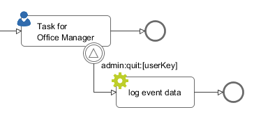
See Help > Designer Guide > Process Modeling > Process Elements Reference > Signal Boundary Event for more information.
Signal Start Event
With the Signal Start Event you can start a process by sending a signal.
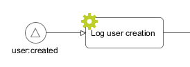
See Help > Designer Guide > Process Modeling > Process Elements Reference > Signal Start for more information.
API for sending Signals
Signals can be sent via API:
Example: Send signal "user:created":
ivy.wf.signals().send("user:created");See Help > Designer Guide > Concepts > Signals > Sending Signals for more information about sending signals.
Signal receivers and history API
With the receiver's API active signal receivers can be queried.
Example: Query all Signal Start Events that listen to the signal code "user:created":
import ch.ivyteam.ivy.workflow.signal.IStartSignalEventElement;
List<IStartSignalEventElement> signalStarts = ivy.wf.signals().receivers()
.createStartSignalQuery()
.where().signalCodePattern().isEqual("user:created")
.executor().results();With the history API sent signals can be queried.
Example: Query sent signals, whose signal code starts with "admin:quit:":
import ch.ivyteam.ivy.workflow.signal.ISignalEvent;
List<ISignalEvent> signalEvents = ivy.wf.signals().history()
.createSignalEventQuery()
.where().signalCode().isLike("admin:quit:%")
.executor().results();See Public API ch.ivyteam.ivy.workflow.signal.IBpmSignalService for more information.
Business Case
The execution of adaptive cases can vary in every execution. Therefore, the workflow user needs a clear context and history for a task on which he is involved.
The entity that can glue multiple process cases together is the Business Case. All cases and tasks that belong to the same Business Case are presented to the user of a workflow screen as related cases.
Attach to Business Case
Every Signal Start event and triggerable Request Start can configure whether its cases should run in the context of the invoking Business Case or if they represent a completely new Case.
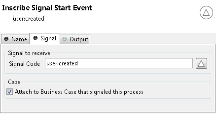You can also use the Public API to attach the current case to an existing Business Case.
if (in.departement.equals("HR")){
ivy.case.attachToBusinessCase(in.callerCaseId)
}Business Case API
For workflow front end developers there exists API to list all tasks or cases of a Business Case. So, showing the involved cases and tasks to a workflow user is a simple implementation. For more details see the Public API of ch.ivyteam.ivy.workflow.businesscase.IBusinessCase.
ivy.case.getBusinessCase().getActiveTasks(); // get involved tasks that are active
ivy.case.getBusinessCase().getTasks(); // get all involved tasksCase Map
In adaptive case management the loose coupling between the processes, which you can achieve easily with the concept of Signals, is cursing and blessing at the same time. The processes become highly flexible but the big picture of the hole business process from a business point of view get lost.
At this point the case map comes into play. A case map defines how the business process looks like in terms of stages, processes and side steps. A business process is divided into stages. Each stage defines a certain phase in the lifecycle of a business process. A business process is started with the first stage in the case map. The processes in a stage are executed from top to bottom. The execution of a process is conditional and control with a precondition. If the last process of a stage is executed then the stage is finished and the next stage gets started. A business process is finished if the last stage has been executed. However, a business process can jump from stage to stage in any order by setting the stage attribute of a business case.
New Case Map Wizard
To create a new case map, you can use the New Case Map Wizard.

Case Maps in the IvyProject tree
Case Maps are displayed in the IvyProject tree. Double click on them will open the Case Map editor.
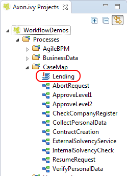Case Map Editor
To create and edit Case Maps you can use the Case Map Editor.
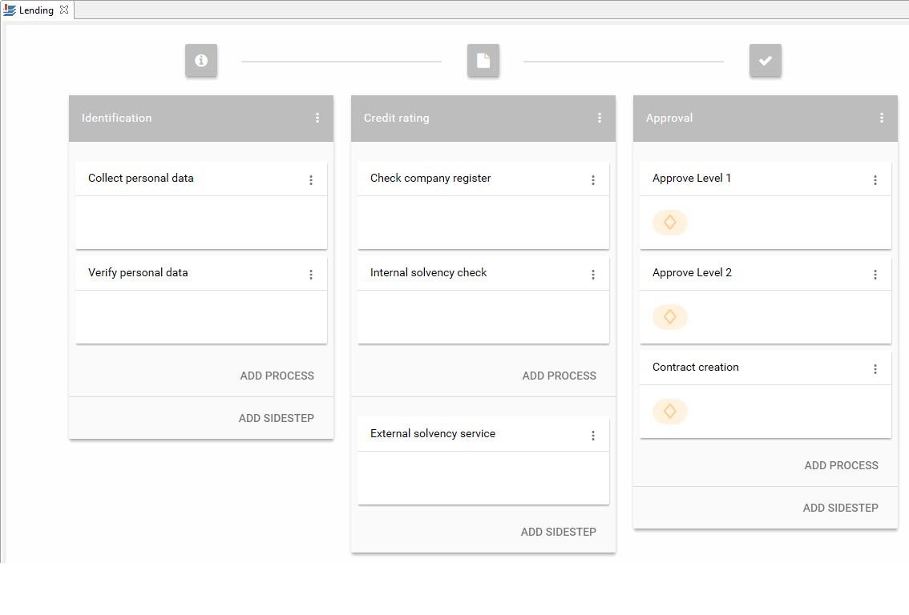Designer Workflow UI support for Case Maps
A case map can be started from the engine start page.
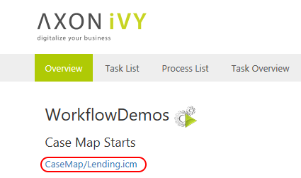The case map associated with a business case is displayed in the business case details.
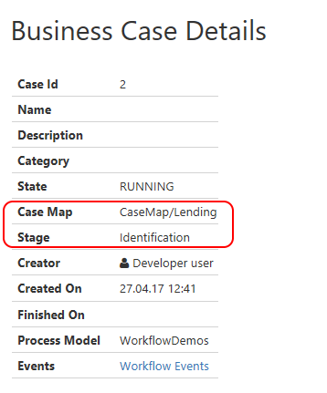Animation / Simulation of Case Maps
You can follow the execution of a Case Map in the Case Map Editor. It uses the simulation settings known from the BPM processes.
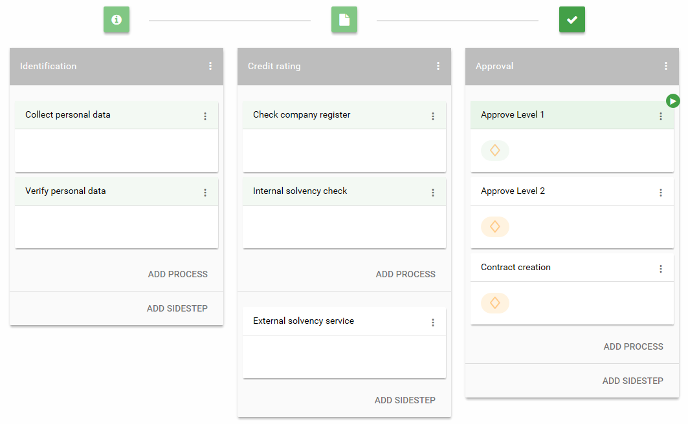Business Data Store
The Business Data feature allows to store and load business data in a built-in repository without defining a schema. Compared to other ivy persistence features like database steps and JPA no additional database, database connection, schema or tables are needed.
The business data structure is defined by declaring normal data classes or Java classes. When storing a business data object all objects that are referenced from the root object are stored as well. Loading a business data object will recreate the whole object structure again. The data is stored in a schema less JSON based data format in the ivy standard System database. This allows to add fields to data classes over time and still be able to load old business data without migration.
The business data feature also allows to search the stored data by defining field based filters.
See Help > Designer Guide > Data Modeling > Business Data Store
Store
Normal data classes and Java objects can be stored without defining a database schema!
Create and save:Dossier dossier = ...
in.businessDataId = ivy.repo.save(dossier).getId();Load
Load a business data object from the repository to modify it.
Load, modify and save:Dossier storedDossier = ivy.repo.find(in.businessDataId, Dossier.class);
storedDossier.getPerson().setFirstName("Marco");
ivy.repo.save(storedDossier);Search
There is a new fluent API to search stored business data. The API supports filtering, ordering and limiting of the results.
Example: Search all dossiers that have a person.firstName starting with A, sort the dossiers by person.lastName and return the first 10 matching dossiers:
List<Dossier> result = ivy.repo.search(Dossier.class)
.textField("person.firstName").containsAllWordPatterns("A*")
.orderBy().field("person.lastName").descending()
.limit(10)
.execute()
.getAll();Example: Search all dossiers that have a field containing one of the words Alan, John or Wolfgang:
List<Dossier> result = ivy.repo.search(Dossier.class)
.allFields().containsAnyWords("Alan John Wolfgang")
.execute()
.getAll();Store with own Id
Instead of using the auto generated id to identify a Business Data value, it is possible to set an own id. The Business Data class must contain a String field with name id and must be set before saving the Business Data value for the first time.
Dossier dossier = ...
String yourId = ... // generate your own id, be sure it is unique!
dosser.id = yourId; // set your id to the Business Data value
ivy.repo.save(dossier);
...
ivy.repo.find(yourId, Dossier.class) // get your Business Data value Business Case Context
If you annotate a data class with BusinessCaseContext then the business data repository loads and saves objects of the data class attached to the current business case.
// Gets the Dossier which is attached to your current business case.
// Either loads it from the repository or if it does not exist yet it creates a new object.
Dossier dossier = ivy.repo.get(Dossier.class);
...
ivy.repo.save(dossier); // save and attach the dossier to the current business case Fuzzy Search and Query String
Sometimes we don't know how a term like a name is correctly spelled, fuzzy search helps you with that by allowing you to search for incorrectly spelled names and still showing relevant entries.
Example: Search all dossiers for Meier.
List<Dossier> result = ivy.repo.search(Dossier.class)
.textField("person.lastName")
.containsAllWordsFuzzy("Meier")
.execute()
.getAll();The result will also display entries containing Maier or Meyer.
The possibility to make search queries that resemble queries performed on an internet search engine was introduced.
Example: Search all fields of a Dossier that contain Baldwin with the edit distance (fuzziness) of 1 and score documents higher that don't contain Alec.
List<Dossier> result = repo.search(Dossier.class)
.score()
.allTextFields()
.query("Baldwin~1 -Alec")
.execute()
.getAll();A list of possible operators that can be used inside the query can be found in the Elasticsearch documentation for Simple Query String.
Elasticsearch 5.5
Elasticsearch which is used to index business data and provides the search functionality has been updated from 2.3.4 to 5.5.0.
REST Web-Services
Ivy supports JAX-RS, the Java specification for RESTful web services. How to use and provide REST services is demonstrated in the new ConnectivityDemos project.
The new chapter 3rd Party Integration in the Designer Guide gives you an overview, which options you have to integrate ivy with foreign systems.
See Help > Designer Guide > 3rd Party Integration
REST Client Process Element
There is a new process element called REST Client available. It can be used to call REST Services.
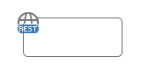The element makes it simple to send dynamic process data to a remote REST service. Within the response tab you can easily consume the result and map it back to your process data.
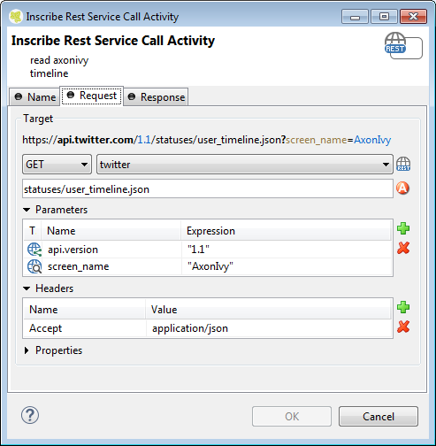The Rest Client element is always an excellent choice to model calls to a remote REST service. If you need to set a request option that is not configurable on the Inscription mask. You can switch to the JAX_RS mode which allows you to fine tune your request and use any logic that is available in the plain java client.
REST Client Editor
There is a new entry in the ivy project tree called 'REST Clients'.
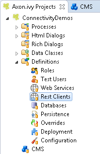The corresponding REST Client Editor can be used to configure REST Clients.
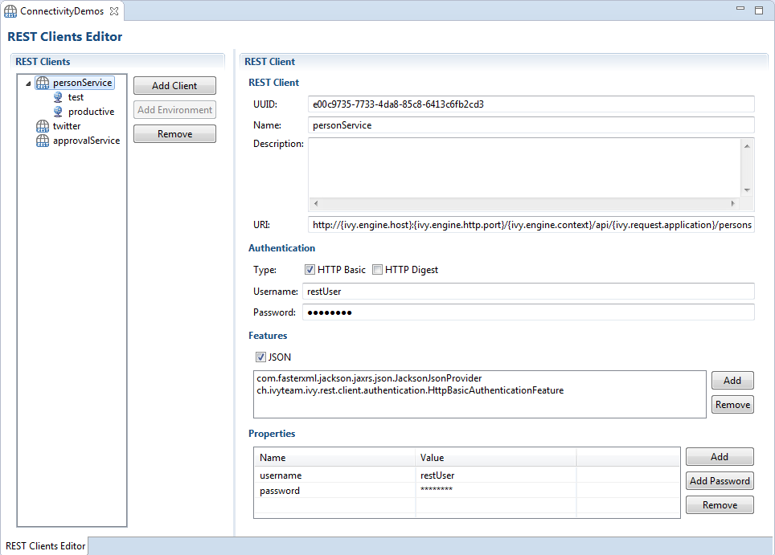See Help > Designer Guide > Configuration > REST Clients Configuration for more information.
REST call logging and monitoring
For each REST call the HTTP request and response is logged to the Runtime Log.
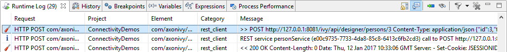>> POST http://127.0.0.1:8081/ivy/api/designer/persons/3
Content-Type: application/json
{"id":3,"firstname":"Reguel","lastname":"Wermelinger"}<< 200 OK
Content-Length: 0
Date: Thu, 12 Jan 2017 10:33:06 GMT
Server: -
Set-Cookie: JSESSIONID=40F782DE16B4E87A21D2946A05532F80; Path=/ivy/; HttpOnlyREST calls are now also monitored. See Engine New and Noteworthy for details.
Provide custom REST Resources
To provide custom REST services from an ivy project, JAX-RS annotations can be used. A Java class that uses the corresponding annotations will be automatically detected and published as REST resource.
@Path("{applicationName}/person")
public class CustomProjectResource {
@GET
@Produces(MediaType.APPLICATION_JSON)
public Person get() {
Person p = new Person();
p.setFirstname("Renato");
p.setLastname("Stalder");
return p;
}
}Fluent SubProcessCall API
String name = SubProcessCall
.withPath("Functional Processes/Customer")
.withParam("id", 27)
.call()
.get("name", String.class);See Public API ch.ivyteam.ivy.process.call.SubProcessCall for more information.
Rule Engine
Drools integration
The Drools Rule Engine is now integrated in Axon.ivy. With a rule engine you can decouple your business rules from your code so that you can develop and test them independently. See the quote from the corresponding blog entry of Martin Fowler:
... is a set of production rules, each of which has a condition and an action - simplistically you can think of it as a bunch of if-then statements. The subtlety is that rules can be written in any order, the engine decides when to evaluate them using whatever order makes sense for it. A good way of thinking of it is that the system runs through all the rules, picks the ones for which the condition is true, and then evaluates the corresponding actions.
Just import the new demo project RuleEngineDemos to get a quick start into the world of rules in Axon.ivy.
See Help > Designer Guide > Concepts > Rule Engine for more information.
Create Rule files
New rule files can be created from the New button in the toolbar or with the menu entry File > New. You can create either a rule file in DRL (Drools Rule Language) or as a decision table. Use the namespace to organize rules.
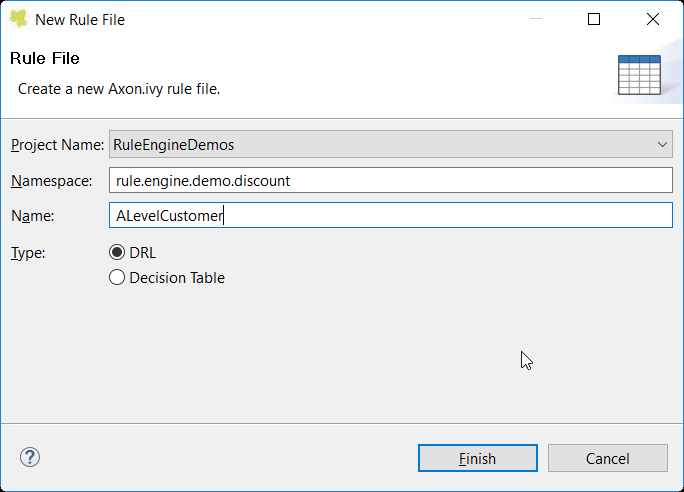See Help > Designer Guide > Concepts > Rule Engine for more information.
Rule files in project tree
The Axon.ivy project root has a new root folder Rules. Below that folder you can see, access and manipulate all your rule files. Double click on a rule file to open it in its editor. The internal DRL editor will open for DRL files. Excel is opened for decision tables in an external window (or in other words, the application that is responsible for opening .xls/.xlsx files)
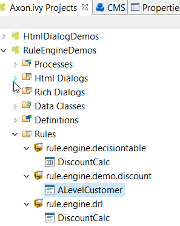See Help > Designer Guide > Concepts > Rule Engine for more information.
Execute rules
A Public API is provided to execute the rules. You have to create a rule base in which you load the rules. Then you pass an instance of a data class or Java class or a list thereof into a rule session and execute it. The results of the rules execution will be visible in the passed data or Java classes.
in.ruleBase = ivy.rules.engine.createRuleBase();
in.ruleBase.loadRulesFromNamespace("rule.engine.demo.discount");
in.ruleBase.createSession().execute(out.myDataElement);See Public API ch.ivyteam.ivy.rule.engine.api for more information.
Rule Resources
Since version 6.5, an alternative for Ivy managed rules is provided. Thus, the developer can manage rules that are not located in the Ivy project. This may be an external file system, a database, a web service ...
IRuleResource ruleFromDb = ... // Provide your own rule resource implementation here. E.g. a rule resource loaded from a db
ruleBase.loadRules(ruleFromDb);See Public API ch.ivyteam.ivy.rule.engine.api.resource.IRuleResource for more information.
Hot rule replacement
If you change an existing rule file during the execution of an Axon.ivy project, then we unload the outdated version of the rule file and load the new changed version. You can continue testing/debugging and the changed/new rules are automatically applied.
Be aware that this feature is not active on the Axon.ivy Engine.
See Help > Designer Guide > Concepts > Rule Engine for more information.
Test rules
We support testing your rules too. Just write a plain normal unit test with JUnit. You only need to inherit from the class AbstractRuleEngineTest and you can access the rule engine like you do in production code. You can execute the tests in the Designer as usual. You can run them with our Maven plugin. No problem.
Html Dialog
Start last executed process
It is now possible to start the last executed process on an error page when working with JSF (especially useful when working with Managed Beans). When the button is clicked the last process launch configuration is executed.

Auto Initialization Data Classes
Data Classes are now automatically initialized if an Html Dialog sets a property on it.
E.g. If data.address is null and a form is submitted with a value for data.address.street, then a data.address object is automatically created.
This means no more problems with not initialized complex data structures in Html Dialogs (javax.el.PropertyNotFoundException: Target Unreachable).
See also Public API ch.ivyteam.ivy.scripting.objects.jsf.el.AutoInitializable.
Exception Handling
Ajax exception handlers can catch exceptions which occur in ajax based HTTP requests.
By default, there are ajax exception handlers predefined in webContent/layouts/includes/exception.xhtml and used in standard layouts.
Especially expired session or view exceptions can be treated correctly now.
<p:ajaxExceptionHandler
type="javax.faces.application.ViewExpiredException"
update="viewExpiredExceptionDialog"
onexception="PF('viewExpiredExceptionDialog').show();"/>
<p:dialog id="viewExpiredExceptionDialog" header="View or Session Expired" widgetVar="viewExpiredExceptionDialog" height="50px">
<h:outputText value="The view or session has expired."/>
<br/>
<h:outputLink value="#{ivy.html.loginRef()}">Please login again.</h:outputLink>
</p:dialog>See Help > Designer Guide > User Dialogs > Html Dialogs > Error Handling for more information.
Html Dialog Editor
Manipulate components
It is possible to select embedded components with a left mouse click as usual. Use the DELETE key to delete the selected component(s) or use F3 to jump to the component. It is also possible to re-arrange the component in the view by drag and drop.
Configure components
You can now graphically configure the attributes and the start method of Ivy and JSF composite components directly in the editor. Double click on a component to open the default action for the component. In there you can choose which start method to use (only for Ivy components) and you can map all the attributes that are defined in the interface of the component.
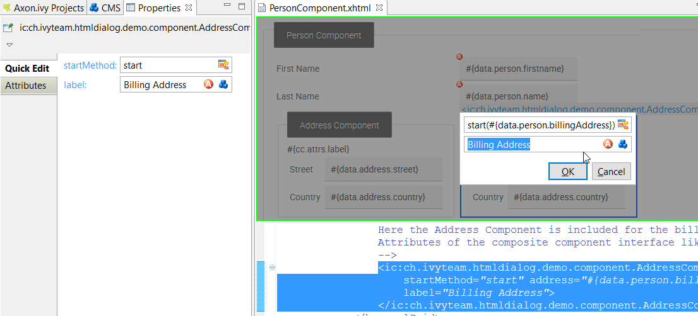See Help > Designer Guide > User Interface > Html Dialogs > Html Dialog View Types for more information about components.
Better Icon browser
The Font Awesome icons can now be selected from the Icon Browser as well. Furthermore, the icon is now magnified when you hover over it with the mouse and you have more options to filter your icons.
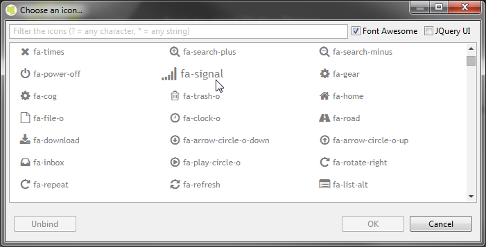Furthermore, you can now use the Icon Browser as well in the source editor. Use Quick Fix (Ctrl + 1), Code Completion (Ctrl + Space) or the linking feature with F3 (or Ctrl and right mouse click) to invoke the Icon Browser when the caret is inside the icon property. Note, that you can navigate through the Icon browser with the keyboard.
DnD JSF composite components
You can now Drag and Drop as well JSF composite components from the palette into a dialog.
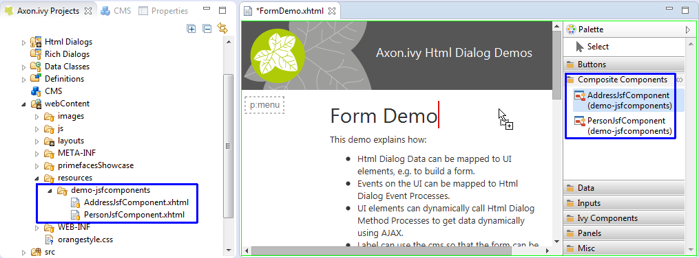Facets
Facets are now rendered better and it is even possible to select and delete them. We too added drag and drop support for the facets so that you can insert elements from the palette into the facet of a table or panel grid (and more).
Smart buttons in property view
In the cell editors of the property view you can now use smart buttons to easily insert CMS content objects, a binding to a data class or a mapping to a logic element.
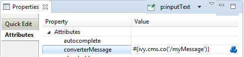Task and Case Categorization
Case and Task Categories
A Case or a Task can be assigned to a Category. A category is a structured String (e.g. Finance/Invoices/Payables) and categorize them into a hierarchical structure.
It is beside the name of a Task (or Case) an important identification attribute of a Case or Task.
Category API
There is a new category property for cases and tasks. A category is a structured String (e.g. Finance/Invoices) and categorize them into a hierarchical structure.
The Category API allows to get localized information from the CMS.
E.g. the name of the category Finance/Invoices is stored in the CMS at /Categories/Finance/Invoices/name.
The following example shows a simple usage of a category on Case level. The API on Task level is identical.
ivy.case.setCategoryPath("Finance/Invoices");
String categoryName = ivy.case.getCategory().getName(); // EN: "Invoices", DE: "Rechnungen"
String categoryPath = ivy.case.getCategory().getPath(); // EN: "Finance/Invoices", DE: "Finanzen/Rechnungen"Security
HTTP Basic Authentication
Web Service processes can now be authenticated using HTTP Basic. Therefore, it is now possible to use a common authentication mechanism between Web Service calls and Web Service processes.
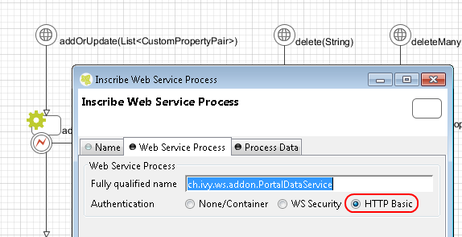Since HTTP Basic sends the password in clear text over the wire we strongly suggest that you use HTTPS to secure the communication.
Role Members
We have introduced the concept of Member Roles, which simplifies the configuration and administration of roles.
In the configuration example below the role First Level has linked member roles Team A and Team B. While resolving the role tree these member roles are handled like child roles. So users of group Team A or Team B have the role First Level too.
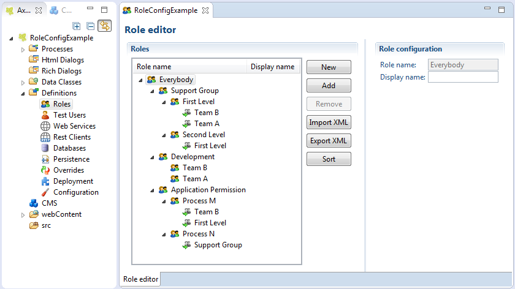See Help > Designer Guide > Configuration > Roles and Users for more information.
Continuous Integration
Axon.ivy CI Plugin
The Maven project-build-plugin for ivy projects is now able to execute unit tests with maven-surefire, execute integration tests with Selenium, start & stop the test engine and to deploy projects to a running Axon.ivy Engine application.
New project version format
Axon.ivy projects now have a new version format. It is now possible to specify a version with major, minor and incremental parts: e.g. 1.2.3-SNAPSHOT
Mobile App - Geo Location
Location Service
The mobile app sends the current position of a mobile device to Axon.ivy. The information is then stored in location services that are available on the user that has worked with the mobile app and on tasks that have been worked on the mobile app.
Get latest position of task:
import ch.ivyteam.ivy.location.GeoPosition;
GeoPosition taskPosition = ivy.task.locations().search().findLatest().getPosition();Get latest position of user:
import ch.ivyteam.ivy.location.GeoPosition;
GeoPosition userPosition = ivy.session.getSessionUser().locations().search().findLatest().getPosition();The location service can also be used to store additional locations:
import ch.ivyteam.ivy.location.GeoPosition;
import ch.ivyteam.ivy.location.ILocation;
ivy.session.getSessionUser()
.locations()
.add(ILocation
.create(GeoPosition.inDegrees(47.171573, 8.516835))
.withType("User Home")
.withNote("My Home is my Castle")
);See Help > Designer Guide > Concepts > Offline Tasks > Geo Location for more information.
Public API
API to get everything what is startable
There is a new API to get everything what is startable from an end user point of view. Based on the current session context you will receive all available process starts and additionally all case map starts.
import ch.ivyteam.ivy.workflow.start.IWebStartable;
for (IWebStartable startable : ivy.session.getStartables()) {
startable.getName();
startable.getDescription();
startable.getLink(); // New WebLink value object
startable.getActivator(); // ISecurityMember
}
Noteworthy is the new WebLink value object. It provides simple methods to build a link for the web.
import ch.ivyteam.ivy.model.value.WebLink;
WebLink link = new WebLink("https://www.google.ch/search?q=grüezi&ie=UTF-8");
link.getRelative(); // /search?q=grüezi&ie=UTF-8
link.getRelativeEncoded(); // /search?q=gr%C3%BCezi&ie=UTF-8
link.getAbsolute(); // https://www.google.ch/search?q=grüezi&ie=UTF-8
link.getAbsoluteEncoded(); // https://www.google.ch/search?q=gr%C3%BCezi&ie=UTF-8Case insensitive methods in query API
There are new methods (isEqualIgnoreCase, isNotEqualIgnoreCase, isLikeIgnoreCase, isNotLikeIgnoreCase) on the query API (TaskQuery, CaseQuery, etc) which allow to filter data case insensitive.
import ch.ivyteam.ivy.workflow.query.TaskQuery;
import ch.ivyteam.ivy.workflow.ITask;
List<ITask> tasks = TaskQuery.create().where().name().isLikeIgnoreCase("%customer%").executor().results();
This will find all tasks that contain customer, CUSTOMER or CustoMer, etc. in the task name.
API to get login page url
ivy.html.loginRef() returns the url to the login page. Users can use the login page to authenticate. Consult the engine guide to learn how to customize the login page for your application.
Library Updates
Tomcat 8.5
PrimeFaces 6.1
PrimeFaces, the component library for Html Dialogs, has been updated from version 5.3 to 6.1. This enables you to use new themes and widgets.
See the Migration Notes for a list of known migration issues.
JPA 2.1
The Java Persistence API (JPA) has been upgraded to 2.1. The JPA implementation Hibernate has been upgraded to 4.3.11.
Miscellaneous
Workflow demos
There is a new demo project delivered with the designer which shows some basic workflow control concepts as well as some advanced ones:
- Self Service BPM example (known from the Portal)
- Human Task Assignment examples (parallel/sequential task assignment, user tasks)
- Signal examples
- Trigger example
The project can be found in the applications/samples directory of the Designer.
Easy import of Axon.ivy sample projects
The new Samples icon on the welcome screen makes it easy to import the Axon.ivy sample projects.

Drag and Drop
You can drag and drop ivy archive files (*.iar) to the Ivy Project View. The dropped ivy archive files are then automatically imported to the workspace.

You can also drag and drop any other file to the Ivy Project View to easily copy or move the file into a project.
Development Mail SMTP
The Designer contains now a simple SMTP server. With the default E-Mail preferences, all mails generated from a Mail-Activity will be sent to this SMTP. You can easily view and inspect any of these mails in the 'Email Messages' view. So, it's no longer necessary to configure an external SMTP to develop your processes.
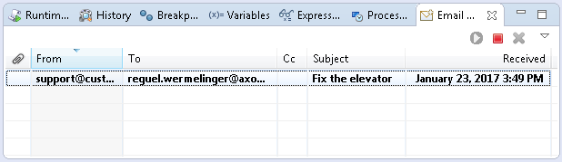New Web-Service Call Options
There are two new options to control how Web-Service request parameters are mapped.
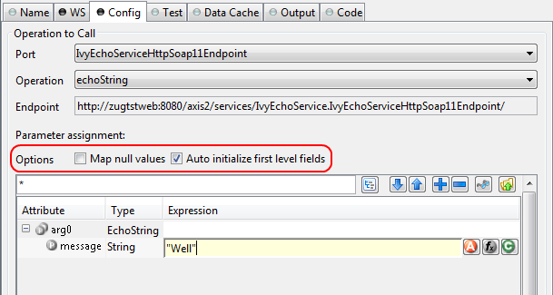See Help > Designer Guide > Process Modeling > Process Elements Reference > Web Service Call Step for more information.
Customized Web-Service Process Endpoints
It's now possible to adapt the auto-generated Web-Service Java file manually, i.e. to add JAX-WS annotations. This is useful in exceptional use cases, when the auto-generated configuration does not fit.
See Help > Designer Guide > Process Modeling > Process Elements Reference > Web Service Start Element > Customization for more information.
Automatic Engine Start
It is now possible to deactivate the automatic start of all process engines on Designer start.
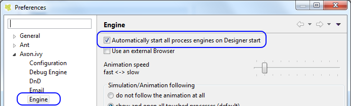Deprecation Preferences
There is a new preference page to control the visibility of deprecated features.
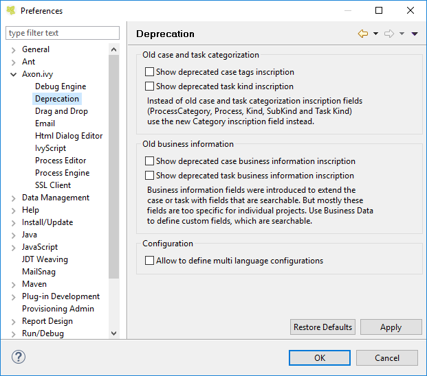Java Annotations on data classes and fields
Basic support for Java Annotations in data classes and fields has been added. You can now configure Java Annotations in the *.ivyclass file of a data class using a text editor.
Data #class
java.lang.Deprecated #classAnnotation
ch.ivyteam.demo #namespace
name String #field
name PERSISTENT #fieldModifier
name 'javax.validation.constraints.NotNull(message="Must not be null")' #fieldAnnotationThe generated java source looks like this:
@java.lang.Deprecated
public class Data extends ch.ivyteam.ivy.scripting.objects.CompositeObject
{
@javax.validation.constraints.NotNull(message="Must not be null")
private java.lang.String name;Axon.ivy Extensions
The extension mechanism of the Axon.ivy Designer and the Engine is now the same since they both run in OSGi mode:
- The installation of extensions like the BIRT process elements is now streamlined. Simply copy your JAR to
dropinsand it will be available at runtime. Thepluginsdirectory should only be used for automatically installed plugins.
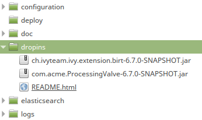 - Like in the Axon.ivy Designer the Engine now also supports the Eclipse extension point mechanism.
Therefore, extensions can be registered in the plugin.xml that is in your Axon.ivy extension bundle (*.jar file).
See Help > Designer Guide > Concepts > Extensions for more information.